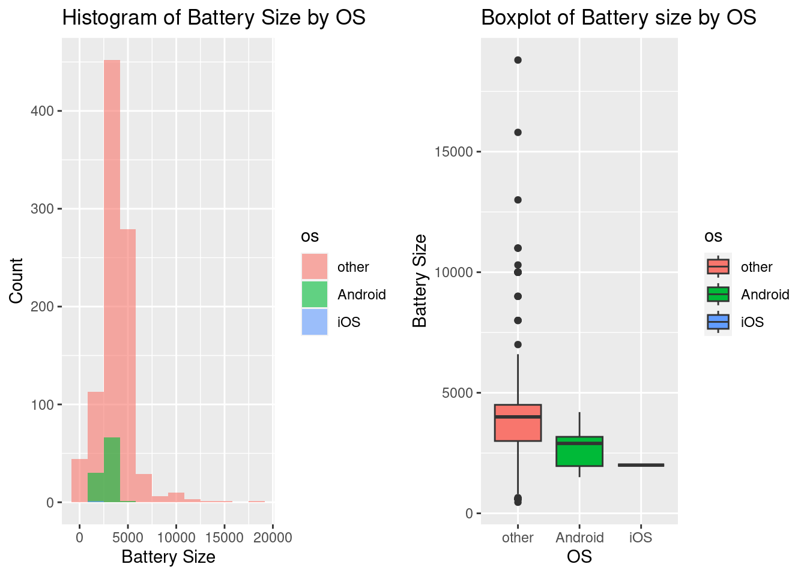

library(stringr)
library(mgcv) # GAMs
library(rsample) # data splitting
library(dplyr) # data wrangling
library(rpart) # performing regression trees
library(rpart.plot) # plotting regression trees
library(ipred) # bagging
library(caret)
library(ggcorrplot)
library(gbm) # gradient boosting
library(gridExtra)Final_Project
Quarto version
Setup
Import the libraries
Data analysis
Dataset loading
df <- read.csv("phones_data.csv", header=T)
summary(df) X brand_name model_name os
Min. : 0.0 Length:1224 Length:1224 Length:1224
1st Qu.: 305.8 Class :character Class :character Class :character
Median : 611.5 Mode :character Mode :character Mode :character
Mean : 611.5
3rd Qu.: 917.2
Max. :1223.0
popularity best_price lowest_price highest_price
Min. : 1.0 Min. : 214 Min. : 198 Min. : 229
1st Qu.: 306.8 1st Qu.: 2600 1st Qu.: 2399 1st Qu.: 2887
Median : 612.5 Median : 4728 Median : 4574 Median : 5326
Mean : 612.5 Mean : 7941 Mean : 7716 Mean : 9883
3rd Qu.: 918.2 3rd Qu.: 9323 3rd Qu.: 9262 3rd Qu.:12674
Max. :1224.0 Max. :56082 Max. :49999 Max. :69999
NA's :260 NA's :260
sellers_amount screen_size memory_size battery_size
Min. : 1.00 Min. :1.400 Min. :3.20e-03 Min. : 460
1st Qu.: 2.00 1st Qu.:5.162 1st Qu.:3.20e+01 1st Qu.: 2900
Median : 8.00 Median :6.000 Median :6.40e+01 Median : 3687
Mean : 16.74 Mean :5.394 Mean :9.57e+01 Mean : 3608
3rd Qu.: 26.00 3rd Qu.:6.400 3rd Qu.:1.28e+02 3rd Qu.: 4400
Max. :125.00 Max. :8.100 Max. :1.00e+03 Max. :18800
NA's :2 NA's :112 NA's :10
release_date
Length:1224
Class :character
Mode :character
| Variables | Description | Type |
|---|---|---|
| brand_name | Name of the phone brand | chr |
| model_name | Name of the phone model | chr |
| os | Operating system | chr |
| Popularity | The popularity of the phone in range 1-1224 | int |
| Best Price | Best price of the price-range in (UAH) | num |
| Lowest Price | Highest price of the price-range in (UAH) | num |
| highest_price | Lowest price of the price-range in (UAH) | num |
| Sellers amount | The amount sellers sold the phone | num |
| Screen size | The size of phone’s screen (inches). | num |
| Memory size | The size of the phone’s memory (GB) | num |
| Battery size | The size of the phone’s battery (mAh) | num |
| Release date | The launch date of the product on the market | chr |
Dataset cleaning
Removing the index column
df$X = NULLFactorizing the categorical variables
df$brand_name <- factor(df$brand_name)
df$os <- factor(df$os)Managing missing variables
Battery_size and screen_size handling
We decided to drop the rows having missing variables for battery_size and screen_size since they were in low number.
df <- df[- which(is.na(df$battery_size)),]
df <- df[- which(is.na(df$screen_size)),]For the rows having missing values for highest_price and lowest_price we substitued them with a value that is resistant to outliers, namely the median. #### Highest/Lowest_price handling
tmp <- which(is.na(df$lowest_price))
df$lowest_price[tmp] <- median(df$lowest_price[-tmp])tmp <- which(is.na(df$highest_price))
df$highest_price[tmp] <- median(df$highest_price[-tmp])Memory_size handling
We noticed that the only rows having NA in the memory_size feature were those with os == "". Further investigation shows that this blank os refers to very simple phones that are usually given to elderly people. We decided to label them as other.
# Replace empty strings in df$os with "other"
df$os <- sub("^$", "other", df$os)
df$os <- factor(df$os)summary(df[df$os == "other", "memory_size" ]) Min. 1st Qu. Median Mean 3rd Qu. Max. NA's
0.0032 0.0320 0.0320 0.9702 0.0320 64.0000 111 # Plot the standardized 'memory_size' column
memory_size_other <- df[df$os == "other", "memory_size"]
# Get the indices of the top 5 values
top5_indices <- order(memory_size_other, decreasing = TRUE)[1:5]
# Create a color vector
colors <- rep("black", length(memory_size_other))
colors[top5_indices] <- "red"
# Plot the 'memory_size' column for 'other' OS with the top 5 values colored red
plot(memory_size_other, main = "Memory Size for 'other' OS", ylab = "Memory Size", col = colors, type = "p")Given the presence of such big outliers, we decided to substitute the NA with the median of the data having “other” as the os feature.
tmp <- df[which(df$os == "other"),]$memory_size
df$memory_size[which(is.na(df$memory_size))] <- median(tmp[-which(is.na(tmp))])Converting prices
Aux function for € conversion
# Function to convert currency A to Euros
convert_to_euros <- function(value, conversion_rate = 0.024) {
# Return the value in Euros
return(value * conversion_rate)
}Conversion
df$best_price <- convert_to_euros(df$best_price)
df$lowest_price <- convert_to_euros(df$lowest_price)
df$highest_price <- convert_to_euros(df$highest_price)Improving readibility of the os variable
table(df$os)
Android EMUI iOS KAIOS other OxygenOS
910 2 97 1 196 3
WindowsPhone
3 We notice that, for the os feature, 2 are EMUI, 1 is KAIOS, 3 are OxygenOS and 3 are WindowsPhone. We decided to lable them either Android or other based on which class theyr features were closer to.
Labeling of the other OSs
# Function to calculate the mean of all numeric columns for each value of df$os
calculate_means <- function(df) {
# Split the data frame by the 'os' column
split_df <- split(df, df$os)
# Function to calculate the mean of each column
mean_fun <- function(x) {
if(is.numeric(x)) mean(x, na.rm = TRUE) else NULL
}
# Apply the function to each subset of the data frame
mean_df <- lapply(split_df, function(x) sapply(x, mean_fun))
# Remove NULL elements (non-numeric columns)
mean_df <- lapply(mean_df, function(x) x[!sapply(x, is.null)])
# Convert the list back to a data frame
mean_df <- do.call(rbind, mean_df)
return(mean_df)
}
calculate_means(df) popularity best_price lowest_price highest_price sellers_amount
Android 629.967 191.369 168.8557 205.6044 13.01648
EMUI 412 759.744 743.544 794.136 10
iOS 865.9691 508.7693 434.6948 621.6396 42.49485
KAIOS 832 24.864 21.576 25.416 42
other 410.6276 18.16947 27.96331 34.21592 21.0051
OxygenOS 448 158.704 144.16 200.776 9.333333
WindowsPhone 197 62.4 108.468 127.176 1
screen_size memory_size battery_size
Android 6.045209 96.43956 4137.695
EMUI 6.58 512 4200
iOS 5.561856 161.1134 2683.557
KAIOS 2.4 4 2000
other 2.314949 0.4388653 1647.194
OxygenOS 5.5 106.6667 3400
WindowsPhone 4.5 16 2000 From these results we decided to relable them in this way: - EMUI -> Android - KAIOS -> other - OxygenOS -> Android - WindowsPhone -> Android
# Recode the 'os' column
levels(df$os) <- c("other", "Android", "Android", "iOS", "other", "Android", "Android")Handling outlier
From our previous data exploration there was one phone having os == "other" with a relatively big value for its memory_size feature. We decided to lable it as Android.
df[df$os == "other", ][which.max(df$memory_size[df$os == "other"]),]$os = "Android"Splitting the timestamp
To better explore the relationship between best_price and release_date we decided to split the latter variable in two features: month and year. For simpler reading we subtracted 2000 to the years.
df$month <- as.numeric(sapply(df$release_date, FUN = function(x) {strsplit(x, split = '[-]')[[1]][1]}))
df$year <- as.numeric(sapply(df$release_date, FUN = function(x) {strsplit(x, split = '[-]')[[1]][2]}))-2000Checking for duplicates
We first check for duplicates inside the data, not considering the features popularity and model_name
idxs <- which(duplicated(df[,c(-2, -4)]))
df[idxs[0:10],] brand_name model_name os popularity
3 ALCATEL 1 5033D 1/16GB Volcano Black (5033D-2LALUAF) other 299
4 ALCATEL 1 5033D 1/16GB Volcano Black (5033D-2LALUAF) other 287
11 Honor 10 lite 3/64GB Black other 179
15 Nokia 105 Dual Sim 2019 Black (16KIGB01A01) other 274
20 Nokia 105 Single Sim New Black (A00028356) other 455
24 Nokia 106 New DS Grey (16NEBD01A02) other 841
26 Honor 10i 4/128GB Blue (51093VQX) other 444
32 Meizu 15 4/64GB Black other 125
33 Meizu 15 4/64GB Black other 116
35 Meizu 15 Plus 6/64GB Gray other 415
best_price lowest_price highest_price sellers_amount screen_size memory_size
3 43.272 39.816 59.736 36 5.00 16.000
4 43.272 39.816 59.736 36 5.00 16.000
11 118.752 111.504 128.928 8 6.21 64.000
15 14.424 12.936 16.872 31 1.77 0.032
20 15.912 11.976 28.056 5 1.80 0.004
24 14.304 13.056 16.776 35 1.80 0.032
26 131.976 108.468 127.176 2 6.21 128.000
32 126.528 119.280 130.752 3 5.45 64.000
33 126.528 119.280 130.752 3 5.45 64.000
35 127.872 108.468 127.176 1 5.95 64.000
battery_size release_date month year
3 2000 9-2020 9 20
4 2000 9-2020 9 20
11 3400 12-2018 12 18
15 800 11-2019 11 19
20 800 9-2017 9 17
24 800 1-2019 1 19
26 3400 5-2019 5 19
32 3000 5-2018 5 18
33 3000 5-2018 5 18
35 3500 6-2018 6 18We decide to aggregate the duplicates in one row, having its popularity subsituted by the mean of the duplicates.
idxs <- which(duplicated(df[,c(-2, -4)]))
succ <- idxs[-length(idxs)] - idxs[-1] == -1
succ <- c(succ, FALSE)
i = 1
while (i <= length(idxs)){
start = idxs[i]-1
sum <- c(df$popularity[idxs[i]])
while (succ[i] == TRUE){
i = i + 1
sum <- c(sum, df$popularity[idxs[i]])
}
df$popularity[start] <- mean(c(sum, df$popularity[start]))
i = i + 1
}
df <- df[-idxs, ]Handling popularity
We decided to group phones by their popularity in a new variable called popularity_level defined as: - Phones below the first popularity quartile are labeled as low - Phones above the first popularity quartile and below the second are labeled as low-medium - Phones above the second popularity quartile and below the third are labeled as medium-high - Phones above the third popularity quartile are labeled as high
df$popularity <- as.numeric(df$popularity)
tag <- quantile(df$popularity)
df$popularity_levels <- cut(df$popularity, breaks = tag,
labels=c("low", "medium-low", "medium-high", "high"), include.lowest=TRUE)Dataset exploration
Correlation matrix
We begin by computing the correlation matrix between the quantitative variables
# Select the numeric columns
df_numeric <- df[sapply(df, is.numeric)]
# Compute the correlation matrix
cor_matrix <- cor(df_numeric, use = "complete.obs")
ggcorrplot(cor_matrix, hc.order = TRUE, lab = TRUE, colors=c("yellow", "white", "purple"))From this matrix we can deduce: - The features highest_price and lowest_price are pretty much linearly correlated with best_price - memory_size also shows a strong positive correlation with best_price and a mild postive correlation with screen_size - year, popularity, sellers_amount and screen_size show a light positive correlation - month and battery_size show almost no linear correlation with best_price
Barplots
For the quantitive variables we decided to plot the barplots. Notably we decided to color the bars based on their os feature, since we expect the phones with os == "other" to have a different distribution than Android and iOs.
cols <- c(5, 8:11)
for (i in cols) {
layout(mat=matrix(c(1,2),2,1,byrow = TRUE), height = c(1,8) )
par(mar=c(0,3.1,1.1,2.1))
boxplot(df[, i], horizontal = TRUE, xaxt = "n", col= "yellow", frame= F, main=colnames(df)[i]) # xaxt
par(mar=c(4,3.1,1.1,2.1))
hist(df[, i],border = F, main = "", col="purple")
}
layout(mat=matrix(c(1,2),2,1,byrow = TRUE), height = c(1,8) )
par(mar=c(0,3.1,1.1,2.1))
boxplot(df[, "screen_size"], horizontal = TRUE, xaxt = "n", col= "yellow", frame= F, main=colnames(df)["screen_size"]) # xaxt
par(mar=c(4,3.1,1.1,2.1))
hist(df[, "screen_size"],border = F, main = "", col="purple")# Load the ggplot2 package
library(ggplot2)
# Create a stacked barplot of df$screen_size colored by df$os
ggplot(df, aes(x = factor(screen_size), fill = os)) +
geom_bar(position = "stack") +
theme_minimal() +
labs(title = "Screen Size by OS", x = "Screen Size", y = "Count")# Create a histogram of df$screen_size colored by df$os
hist_screen_size <- ggplot(df, aes(x = screen_size, fill = os)) +
geom_histogram(position = "identity", alpha = 0.6, bins = 12) +
labs(title = "Histogram of Screen Size by OS", x = "Screen Size", y = "Count")
# Create a boxplot of df$screen_size colored by df$os
box_screen_size <- ggplot(df, aes(x = os, y = screen_size, fill = os)) +
geom_boxplot() +
labs(title = "Boxplot of Screen Size by OS", x = "OS", y = "Screen Size")
# Arrange the histogram and boxplot in a grid
grid.arrange(hist_screen_size, box_screen_size, ncol = 2)# Create a histogram of df$memory_size colored by df$os
hist_screen_size <- ggplot(df, aes(x = memory_size, fill = os)) +
geom_histogram(position = "identity", alpha = 0.6, bins = 10) +
labs(title = "Histogram of Memory Size by OS", x = "Memory Size", y = "Count")
# Create a boxplot of df$memory_size colored by df$os
box_screen_size <- ggplot(df, aes(x = os, y = memory_size, fill = os)) +
geom_boxplot() +
labs(title = "Boxplot of Memory Size by OS", x = "OS", y = "Memory Size")
# Arrange the histogram and boxplot in a grid
grid.arrange(hist_screen_size, box_screen_size, ncol = 2)# Create a histogram of df$battery_size colored by df$os
hist_screen_size <- ggplot(df, aes(x = battery_size, fill = os)) +
geom_histogram(position = "identity", alpha = 0.6, bins = 12) +
labs(title = "Histogram of Battery Size by OS", x = "Battery Size", y = "Count")
# Create a boxplot of df$battery_size colored by df$os
box_screen_size <- ggplot(df, aes(x = os, y = battery_size, fill = os)) +
geom_boxplot() +
labs(title = "Boxplot of Battery size by OS", x = "OS", y = "Battery Size")
# Arrange the histogram and boxplot in a grid
grid.arrange(hist_screen_size, box_screen_size, ncol = 2)